Explore Vienna
A Brief History
Vienna is Europe's undisputed capital of classical music and imperial grandeur. As the historic seat of the Habsburg Empire, the city is beautifully adorned with opulent palaces, grand museums, and incredibly elegant coffee houses. From the magnificent Schönbrunn Palace to the soaring Gothic spire of St. Stephen's Cathedral, Vienna offers an unparalleled, highly sophisticated cultural experience.
Attractions Map
Top Sights & Activities
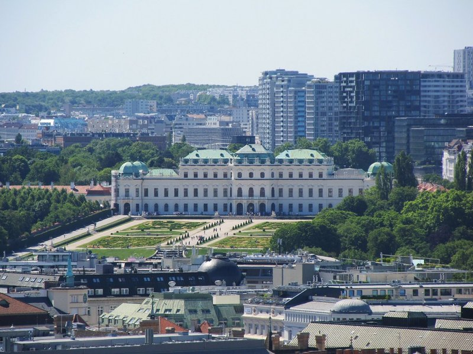
Schloss Belvedere
A historic building complex comprising two Baroque palaces, built in the early 18th century as a summer residence for Prince Eugene of Savoy.

Belvedere-Schlossgarten
The formal Baroque gardens connecting the Upper and Lower Belvedere, featuring symmetrical parterres, cascading fountains, and classical sculptures.
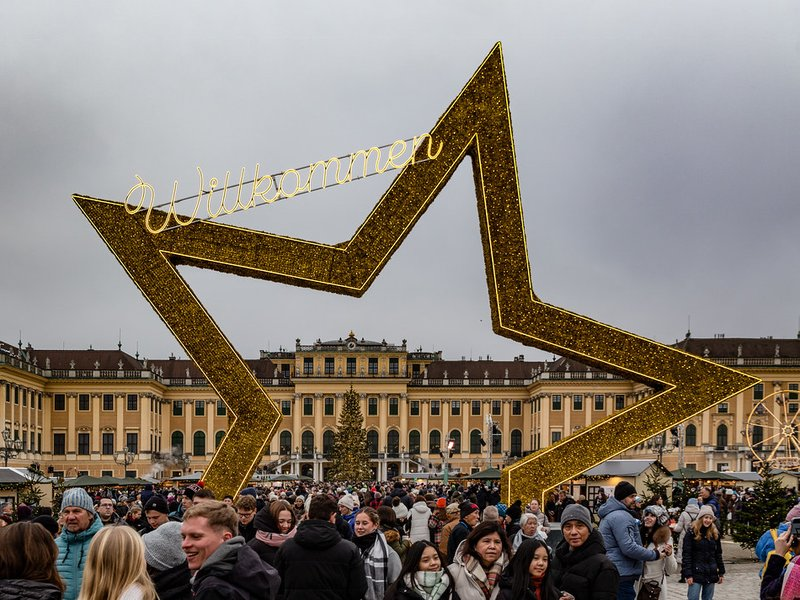
Schloss Schönbrunn
The primary summer residence of the Habsburg rulers, this 1,441-room Rococo palace is a focal point of Austrian imperial history.
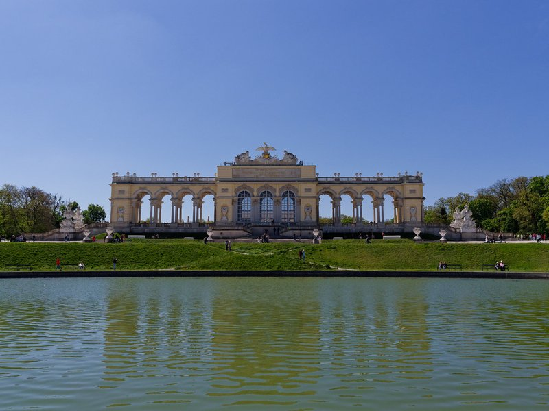
Gloriette Schönbrunn
A classical pavilion built in 1775 on the crest of the Schönbrunn hill, functioning originally as a dining hall and observation point for the emperors.
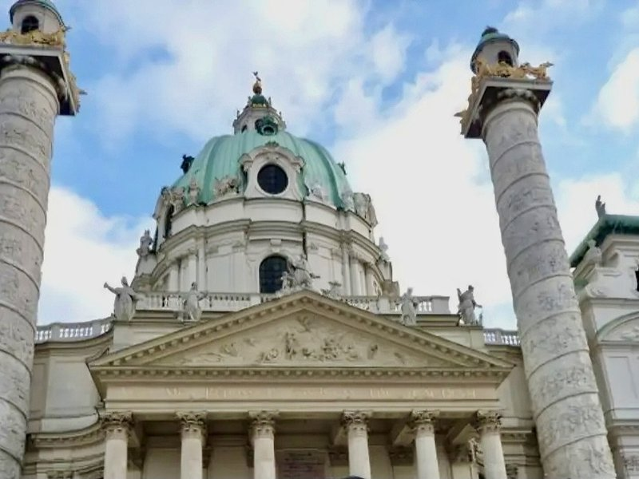
Karlskirche
An 18th-century Baroque church dedicated to Saint Charles Borromeo, constructed following the last major plague epidemic in Vienna.
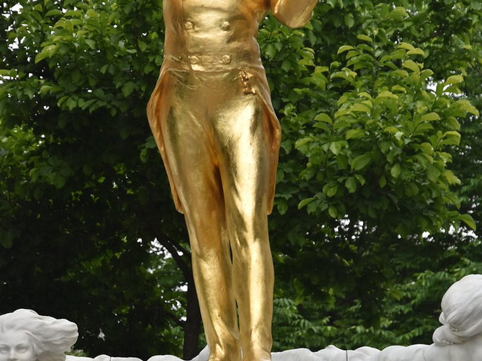
Johann Strauss monument
A gilded bronze statue in the Stadtpark unveiled in 1921, celebrating the composer widely known as the 'Waltz King'.

Vienna City Hall
A monumental Neo-Gothic building completed in 1883 that serves as the seat of the local government and a central hub for civic events.
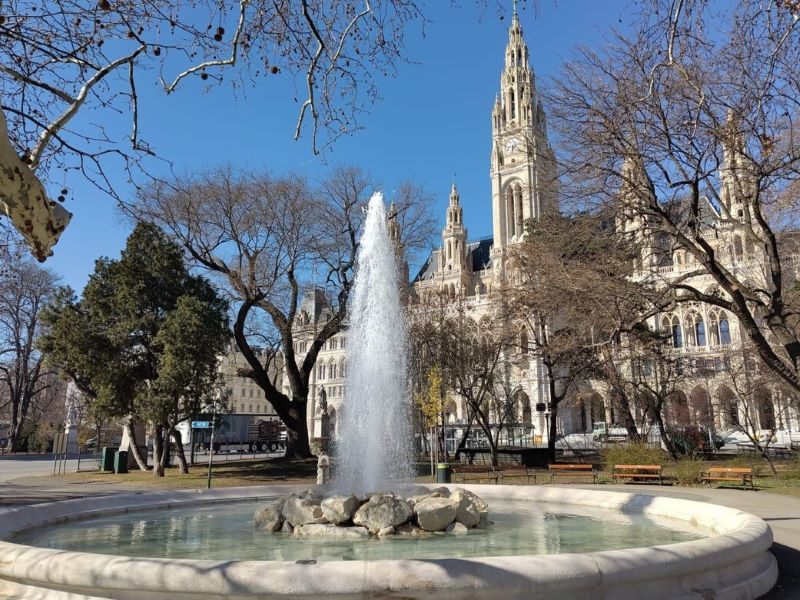
Rathausbrunnen
A classical water fountain situated in the Rathauspark, offering a quiet architectural accent near the bustling City Hall.

Parlament Österreich
The seat of the Austrian parliament, completed in 1883 in Greek Revival style to symbolize the ancient Hellenic origins of democracy.
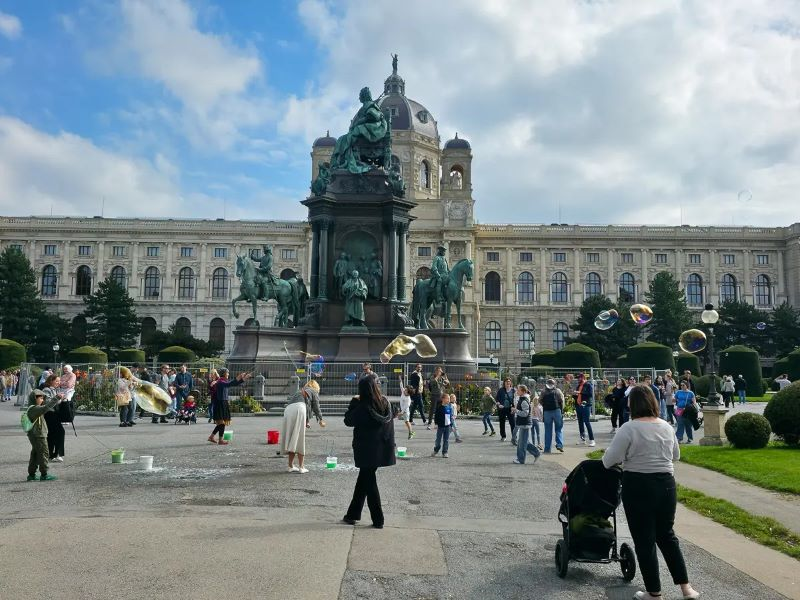
Maria-Theresien-Platz
A prominent public square featuring a large monument to Empress Maria Theresa, flanked by the twin buildings of the Natural History and Art History museums.
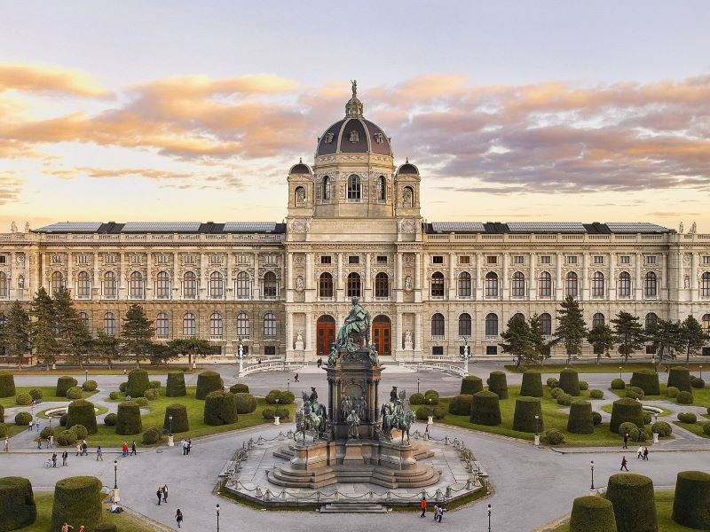
Kunsthistorisches Museum Wien
Commissioned by Emperor Franz Joseph I to house the extensive imperial collections, it remains one of the most important art museums in the world.
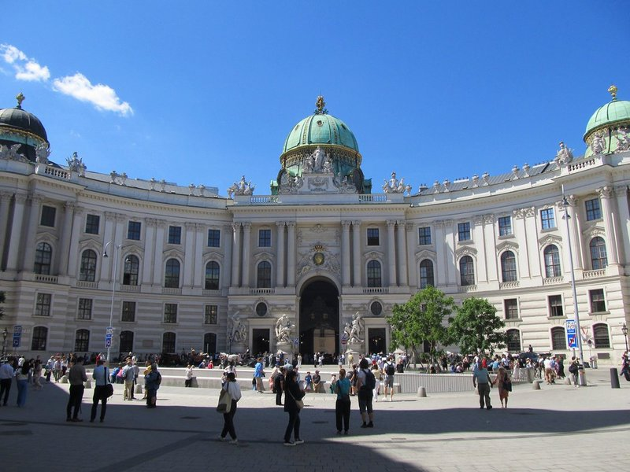
Hofburg
The former principal imperial palace of the Habsburg dynasty, now serving as the official residence and workplace of the President of Austria.

Michaelerplatz
A historic square acting as the gateway to the Hofburg, notable for the excavated ruins of a Roman military camp at its center.
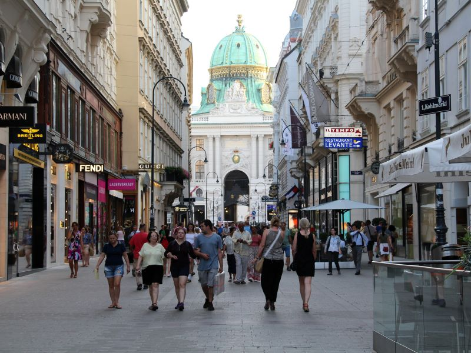
Kohlmarkt
Historically the site of the city's charcoal market, this central street is now renowned as Vienna's premier luxury shopping avenue.

Peterskirche
An ornate 18th-century Baroque church inspired by St. Peter's Basilica in Rome, featuring elaborate frescoes and intricate stucco work.

Column of Pest
A prominent Holy Trinity column on the Graben, erected after the Great Plague of 1679 to fulfill a vow made by Emperor Leopold I.
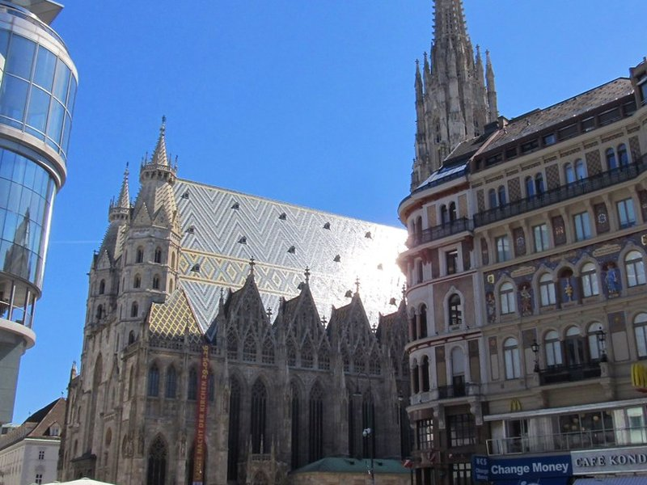
St. Stephen's Cathedral
The mother church of the Roman Catholic Archdiocese of Vienna, its multi-colored tile roof and Gothic architecture have defined the city skyline since the 12th century.